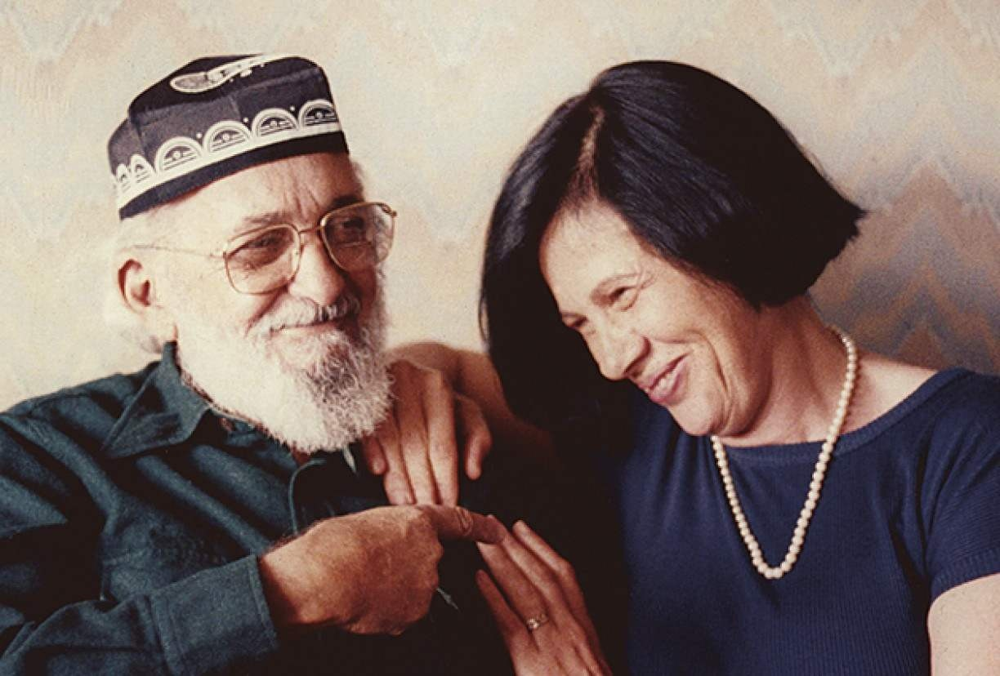

História
História
Paulo Reglus Neves Freire nasceu em 19 de setembro de 1921 no Recife, capital do estado brasileiro de Pernambuco. Filho de Joaquim Temístocles Freire, capitão da Polícia Militar de Pernambuco e de Edeltrudes Neves Freire, Dona Tudinha, Paulo teve uma irmã, Stela, e dois irmãos, Armando e Temístocles. A irmã Stela foi professora primária do Estado. Armando, funcionário da prefeitura da cidade do Recife, abandonou os estudos aos 18 anos, não chegou a concluir o curso ginasial. Temístocles entrou para o Exército. Aos dois, Paulo agradece emocionado, em uma de suas entrevistas a Edson Passetti, pois começaram a trabalhar muito jovens, para ajudar na manutenção da casa e possibilitar que Paulo continuasse estudando.

Sua família fazia parte da classe média, mas Paulo Freire vivenciou a pobreza e a fome na infância durante a depressão de 1929, uma experiência que o levaria a se preocupar com os mais pobres e o ajudaria a construir seu revolucionário método de alfabetização. Por seu empenho em ensinar os mais pobres, Paulo Freire tornou-se uma inspiração para gerações de professores, especialmente na América Latina e na África. O talento como escritor o ajudou a conquistar um amplo público de pedagogos, cientistas sociais, teólogos e militantes políticos, quase sempre ligados a partidos de esquerda.
A partir de suas primeiras experiências no Rio Grande do Norte, em 1963, quando ensinou 300 adultos a ler e a escrever em 45 dias, Paulo Freire desenvolveu um método inovador de alfabetização, adotado primeiramente em Pernambuco. Seu projeto educacional estava vinculado ao nacionalismo desenvolvimentista do governo João Goulart. Na política, integrou o Partido dos Trabalhadores, tendo sido Presidente da 1ª Diretoria Executiva da Fundação Wilson Pinheiro, fundação de apoio partidária instituída pelo PT em 1981 (antecessora da Fundação Perseu Abramo); além de Secretário de Educação da Prefeitura Municipal de São Paulo na gestão petista de Luiza Erundina (1989-1992).
Freire entrou para a Universidade do Recife em 1943, para cursar a Faculdade de Direito, mas também se dedicou aos estudos de filosofia da linguagem. Apesar disso, nunca exerceu a profissão, e preferiu trabalhar como professor numa escola de segundo grau lecionando língua portuguesa. Em 1944, uniu-se em matrimônio com a colega de trabalho Elza Maia Costa de Oliveira, casamento este que durou até o ano de 1986, quando sua esposa morreu. Dois anos depois, em 1988, o educador casou-se com a também com a pernambucana Ana Maria Araújo, apelidada de "Nita", que além de conhecida desde a infância era sua orientanda no programa de mestrado da Pontifícia Universidade Católica de São Paulo, onde foi professor. Ambas as esposas foram reconhecidas por Paulo como importantes em sua carreira, inclusive quando o educador dedicou seu título de Doutor Honoris Causa na PUC de São Paulo "à memória de uma e à vida da outra". Em 1946, Freire foi indicado ao cargo de diretor do Departamento de Educação e Cultura do Serviço Social no Estado de Pernambuco, onde iniciou o trabalho com analfabetos pobres.
Em 1961 tornou-se diretor do Departamento de Extensões Culturais da Universidade do Recife e, no mesmo ano, realizou junto com sua equipe as primeiras experiências de alfabetização popular que levariam à constituição do Método Paulo Freire. Seu grupo foi responsável pela alfabetização de 300 cortadores de cana em apenas 45 dias. Em resposta aos eficazes resultados, o governo brasileiro (que, sob o presidente João Goulart, empenhava-se na realização das reformas de base) aprovou a multiplicação dessas primeiras experiências num Plano Nacional de Alfabetização, que previa a formação de educadores em massa e a rápida implantação de 20 mil núcleos (os "círculos de cultura") pelo País. Em 1964, meses depois de iniciada a implantação do Plano, o golpe militar extinguiu esse esforço. Freire foi encarcerado como traidor por 70 dias. Em seguida passou por um breve exílio na Bolívia e trabalhou no Chile por cinco anos para o Movimento de Reforma Agrária da Democracia Cristã e para a Organização das Nações Unidas para a Agricultura e a Alimentação. Em 1967, durante o exílio chileno, publicou no Brasil seu primeiro livro, Educação como Prática da Liberdade, baseado fundamentalmente na tese Educação e Atualidade Brasileira, com a qual concorrera, em 1959, à cadeira de História e Filosofia da Educação na Escola de Belas Artes da Universidade do Recife.
O livro foi bem recebido, e Freire foi convidado para ser professor visitante da Universidade Harvard em 1969. No ano anterior, ele havia concluído a redação de seu mais famoso livro, Pedagogia do Oprimido, que foi publicado em várias línguas como o espanhol, o inglês (em 1970) e até o hebraico (em 1981). Em razão da rixa política entre a ditadura militar e o socialismo cristão de Paulo Freire, ele não foi publicado no Brasil até 1974, quando o general Geisel assumiu a presidência do país e iniciou o processo de abertura política. Depois de um ano em Cambridge, Freire mudou-se para Genebra, na Suíça, trabalhando como consultor educacional do Conselho Mundial de Igrejas. Durante esse tempo, atuou como consultor em reforma educacional em colônias portuguesas na África, particularmente na Guiné-Bissau e em Moçambique.
Com a Anistia em 1979 Freire pôde retornar ao Brasil, mas só o fez em 1980. Filiou-se ao Partido dos Trabalhadores na cidade de São Paulo, e atuou como supervisor para o programa do partido para alfabetização de adultos de 1980 até 1986. Quando o PT venceu as eleições municipais paulistanas de 1988, iniciando-se a gestão de Luiza Erundina (1989-1993), Freire foi nomeado secretário de Educação da cidade de São Paulo. Exerceu esse cargo de 1989 a 1991. Dentre as marcas de sua passagem pela secretaria municipal de Educação está a criação do Movimento de Alfabetização de Jovens e Adultos (MOVA), um modelo de programa público de apoio a salas comunitárias de Educação de Jovens e Adultos que até hoje é adotado por numerosas prefeituras e outras instâncias de governo.
Em 1991 foi fundado em São Paulo o Instituto Paulo Freire, para estender e elaborar as ideias de Freire. O instituto mantém até hoje os arquivos do educador, além de realizar numerosas atividades relacionadas com o legado do pensador e a atuação em temas da educação brasileira e mundial. Freire morreu de um ataque cardíaco em 2 de maio de 1997, às 6h53, no Hospital Albert Einstein, em São Paulo, devido a complicações em uma operação de desobstrução de artérias. O Estado Brasileiro, por meio do Ministério da Justiça, no Fórum Mundial de Educação Profissional de 2009, realizado em Brasília, fez o pedido de perdão post mortem à viúva e à família do educador, assumindo o pagamento de "reparação econômica".
A educação proposta por Paulo Freire
O pedagogo costumava dizer que a educação era fundamental para a transformação da sociedade. Vários dos seus alunos, depois de alfabetizados, passaram a refletir sobre o trabalho, a ler artigos da constituição brasileira e a cobrar direitos que antes não tinham como férias, dias de descanso e proteção em caso de desemprego ou doença. Paulo Freire era um dos maiores críticos daquilo que chamou de educação bancária, que via o professor como o dono do conhecimento e o aluno como mero recebedor da sabedoria do mestre.
Para ensinar, segundo o educador, era preciso conhecer a experiência do aluno e saber de onde ele partia. Dessa forma, levando em conta os conhecimentos prévios do aluno, o professor era capaz de cativá-lo e apresentar uma série de mudanças práticas no dia a dia.
Toda a educação proposta por Paulo Freire passava pelo diálogo e pela troca sem hierarquias: professor e aluno eram vistos como iguais.
O Plano de Alfabetização criado por Paulo Freire
Em 1963, Paulo Freire, ao lado de outros educadores, conseguiram, em apenas 40 horas, alfabetizar 300 adultos em Angicos, região interior do Rio Grande de Norte. Os alunos eram todos trabalhadores de canaviais locais. O plano de ensino de Paulo Freire foi tão importante que inspirou o Plano Nacional de Alfabetização. Esse Plano Nacional chegou a ser criado através de um decreto assinado pelo presidente João Goulart, mas não foi a frente porque foi interrompido pela ditadura militar em 1964.
Pouca gente sabe que os primeiros passos dados por Paulo Freire no campo da educação foram incentivados e financiados pelo governo norte-americano através da Aliança para o Progresso. Inclusive o mutirão acontecido em Angicos - onde 300 trabalhadores rurais foram alfabetizados, ganhando direito ao voto e aprendendo algumas lições básicas de direitos trabalhistas.
Os americanos achavam que o processo de alfabetização era essencial para afastar o comunismo da América Latina, por isso incentivavam essas iniciativas educacionais.
Quando os militares tomaram o poder, no entanto, acharam perigoso o projeto do educador, porque julgaram que o conhecimento poderia levar a uma possível revolta das camadas mais pobres.
As lições presentes em Pedagogia da Autonomia
No livro Pedagogia da autonomia: saberes necessários à prática educativa (1996), o educador reuniu as principais questões que estudou ao longo da vida e apresentou propostas práticas de como o professor pode estimular a independência do aluno. Essa foi a última obra publicada antes do pedagogo falecer.
O autor destaca muito o fato de que ensinar não deve ser transferir conhecimento e de que é importante valorizar e respeitar a experiência individual de cada aluno ao longo do processo de aprendizagem.
Paulo Freire também destaca a necessidade de despertar a curiosidade naqueles que ensinam e nos que aprendem, havendo sempre uma troca de conhecimento entre quem está dos dois lados do processo.
Também na Pedagogia da Autonomia é destacada a importância de integrar na sociedade os menos favorecidos, aqueles que não tiveram acesso ao estudo formal.
Paulo Freire sublinha igualmente a importância de formar o ser humano não só em termos educativos, mas também éticos, e estimular que cada aluno possa fazer uma reflexão crítica da sociedade.
O método de ensino Paulo Freire
Em 1962 Paulo Freire sistematizou o seu sistema de ensino voltado principalmente para os adultos analfabetos. Original, o método combinava conhecimento dos campos da psicologia, da comunicação e da didática. O educador sublinhava a importância de não usar um método único, com material didático pronto e fechado, mas sim aprender a partir do universo de cada grupo de analfabetos e começar a ensinar indo de encontro às necessidades reais das pessoas, do dia a dia.
De acordo com o educador, num primeiro momento os professores deveriam descobrir quais eram as palavras mais utilizadas pelos alunos e quais eram as questões mais importantes que eles precisavam resolver no cotidiano. Esse levantamento de vocabulário era feito antes mesmo de se começar o processo de alfabetização. Era com base no ensino dessas palavras que começava o processo de aprendizado Paulo Freire queria que os alunos se sentissem motivados a aprender e rapidamente vissem os resultados do aprendizado.
O seu método tinha por base um diálogo entre o educador e o aluno. A educação, para Paulo Freire, era um ato coletivo e solidário. As suas primeiras experiências aconteceram no Recife, no princípio dos anos 60, dentro do Movimento de Cultura Popular. Mais tarde, em 1963, Paulo Freire levou o seu método para outros Estados. Primeiro aplicou o método no Rio Grande do Norte (em Natal e em Angicos), depois em São Paulo (Osasco) e então em Brasília.
Em Angicos, onde pôs em prática pela primeira vez em larga escala o seu método, Paulo Freire e a sua equipe foram capazes de alfabetizar 300 trabalhadores analfabetos adultos em apenas 45 dias. Nesse ano e no ano a seguir diversos cursos de formação de coordenadores de alfabetização aconteceram nas capitais dos Estados Brasileiros. A ideia era instalar 20.000 centros de cultura e formar 2 milhões de alunos por ano. O plano, no entanto, não foi a frente porque em 1964 se instaurou a ditadura militar. inda nos dias de hoje o Método Paulo Freire é utilizado na integração de refugiados na Alemanha, ele é especialmente empregado no ensino do alemão para integração de estrangeiros.
Próximo ➝